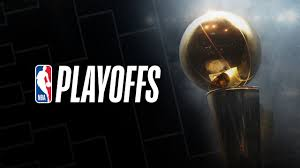
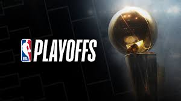

Ya hay playoffs 2020 de la NBA. Los playoffs de Disney, los de la burbuja sanitaria. La fase regular (los seeding games: ocho partidos por equipo) acabó con el primer play in de la historia. Blazers y Grizzlies jugaron un duelo de octavo contra noveno para ser el rival de los Lakers en primera ronda del Oeste. Ganaron los de Oregon a la primera, sin necesidad de jugar el segundo y definitivo partido. Las otras siete eliminatorias ya se conocían, y todas se jugarán con partidos cada dos días ya que no hay, esta vez, viajes entre ciudades. Estos son el cuadro y los horarios de los playoffs 2020, la lucha por el título en la NBA 2019-20
Los Blazers lograron la última plaza en el play in. Y ahora jugarán contra los Lakers en primera ronda de unos playoffs que ya tienen hoja de ruta hacia el anillo de campéon 2020.
Los Playoffs de la NBA de 2020 serán el ciclo de cierre o eliminatorias de la temporada 2019-20 de la NBA. Los playoffs estaban programados para dar comienzo el sábado 18 de abril, pero debido a la suspensión de la regular desde el día 11 de marzo, debido a la pandemia de COVID-19, se retrasó esta fecha.1 Finalmente, los playoffs darán comienzo el 17 de agosto, finalizando con las Finales de la NBA, el 13 de octubre de 2020. Todos los encuentros se disputarán, por primera vez, en un único pabellón, en el Complejo deportivo ESPN, en Lago Bay, Florida, por lo tanto no habrá ventaja de campo para los equipos con mejor balance en temporada regular.
Las eliminatorias o series se juegan en un formato al mejor de 7 partidos, en el que se tiene que ganar 4 partidos para clasificarse para la siguiente ronda. El equipo que posea la ventaja de campo en cada eliminatoria disputará los partidos 1, 2, 5 y 7 como local, mientras que el resto de partidos se jugará en el pabellón del equipo contrario (Formato: 2-2-1-1-1). Se establece como equipo con ventaja de campo al que haya tenido mejor balance en liga entre los 2 contendientes de una eliminatoria. En el momento en que un equipo gana 4 partidos, se clasifica para la siguiente ronda de eliminatoria, sin jugar obligatoriamente los 7 partidos programados.